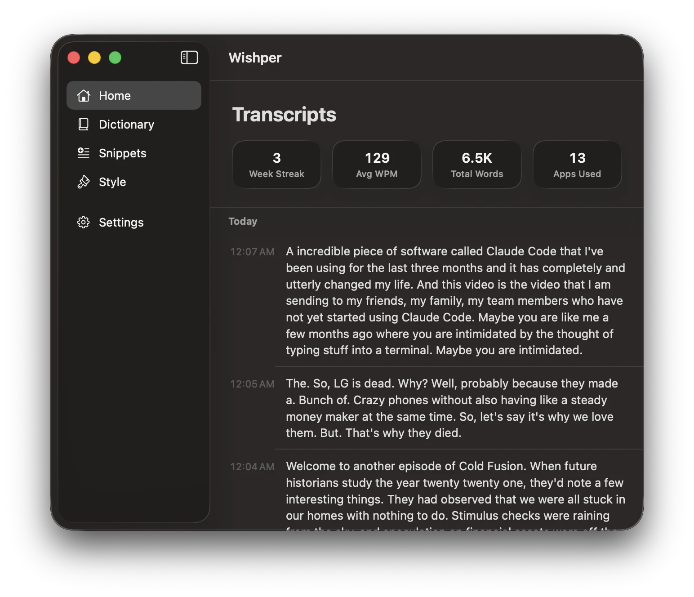

Hold a hotkey, speak naturally, watch your words land in whatever app you're in. No servers, no subscriptions, no tracking.
A free, open-source alternative to Wispr Flow.See Wishper
Every transcript you dictate, your weekly streak, words spoken, apps used — all of it searchable, all of it local. Nothing syncs. Nothing uploads.

Why this exists
Wispr Flow is great — 4× faster than typing, AI-polished output, cross-platform. But free use caps at 2,000 words a week on Mac, unlimited costs $15/month, and every transcription runs on their servers.
Wishper is the unlimited, on-device version. Same hold-to-talk feel — but all inference runs locally via MLX on Apple Silicon. No word caps, no subscription, no cloud. Your voice never leaves the Mac. Trade-off: Apple Silicon only, no cross-device sync.
How it works
Press and hold your chosen shortcut (Right ⌘ by default) anywhere on your Mac.
Talk like you're dictating to a colleague. Um, uh, you know, like — it all gets cleaned up.
Release the key and your polished text appears in Slack, Mail, VS Code, or anywhere else.
Why Wishper
Audio never leaves your Mac. No accounts. No analytics. No network calls. Verify it with Little Snitch.
Powered by MLX. Qwen3-ASR for transcription, a tiny Qwen3 for cleanup. Milliseconds, not seconds.
If your cursor is blinking in a text field, Wishper can type there. Slack, Notes, Xcode, Chrome, Terminal.
FAQ
Yes. Audio never leaves your Mac. Wishper makes zero network calls for dictation — no servers, no accounts, no analytics. Verify it yourself with Little Snitch or Activity Monitor.
Yes. After the first launch downloads the models, you can disconnect your Wi-Fi and Wishper works exactly the same. The only time Wishper touches the network is checking for app updates once a day.
No. Wishper is Apple Silicon only — M1, M2, M3, M4. It uses MLX for on-device inference, which doesn't support Intel Macs.
About 2 GB for the speech-recognition and cleanup models, downloaded on first launch. They live in ~/Library/Application Support/Wishper/.
Any app where you can type into a text field. Slack, Mail, Notes, Messages, Safari, Chrome, VS Code, Xcode, Terminal — all tested. If your cursor is blinking in it, Wishper can type there.
Wispr Flow has a free tier capped at 2,000 words per week on Mac (1,000 on iPhone) and $15/month for unlimited; it processes voice in the cloud and syncs across Mac, Windows, iPhone, and Android. Wishper is free and unlimited, runs 100% on-device via MLX, and is Apple Silicon only — no iPhone, no Windows, no cross-device sync. Same hold-to-talk experience; different trade-offs on privacy, cost, and platform reach.
Yes. Settings → Hotkey. Default is Right Command (hold to dictate). Pick any combination that doesn't conflict with your existing macOS shortcuts.
Wishper auto-checks for updates once a day via Sparkle. Releases are EdDSA-signed so only legitimate builds can install. You can also trigger a check manually from Settings → Updates.